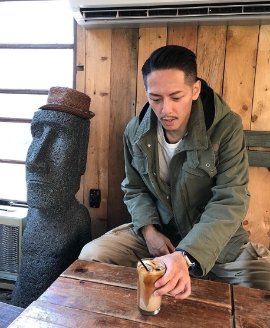
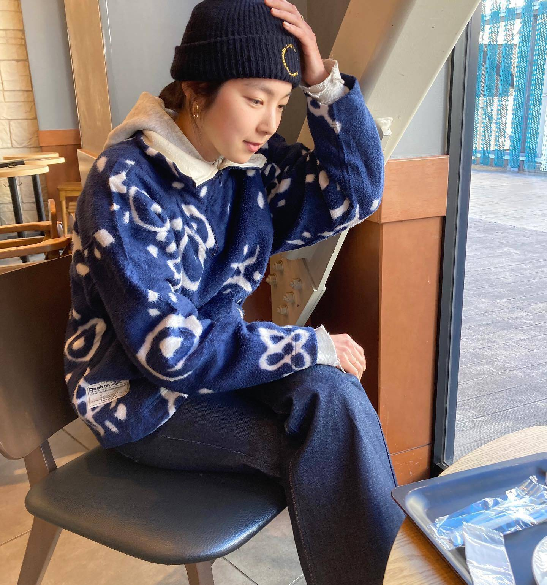
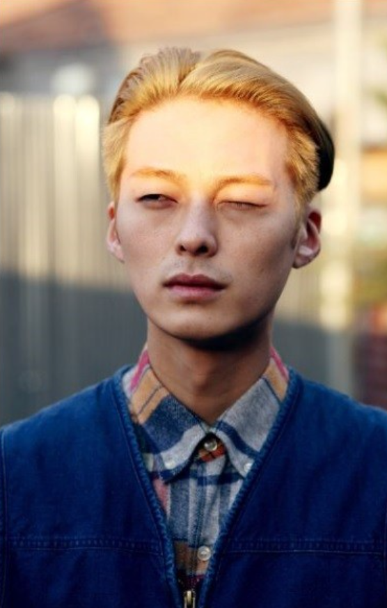
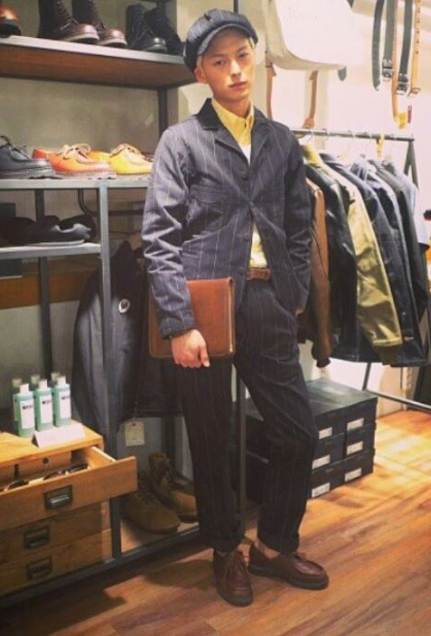

A.C. -Model
-
scott.0319 착장
scott.0319 Model
전체적으로 와이드한 핏감의 아메카지 스타일을 즐겨 착용하시고 일반인도 충분히 따라서 착용해 볼만한 심플하고 과하지 않은 스타일을 추구하시는 것 같습니다. -
아리하라 미유키 착장
아리하라 미유키 Model
매력적이고 독특한 아메카지 스타일을 입는 이 모델은 최근 1~2년에 아메카지 커뮤니티에서 떠오르고 있는 일본의 인기있는 아리하라 미유키 모델입니다. 다른 사람들에게도 충분히 매력적이게 느낄 수있는 착장으로 많은 사람들이 이 모델의 패션을 따라하는 열풍이 돌고있습니다. -
서경덕 착장
 서경덕 Model
워크웨어, 아메카지를 접하면 알게되는 모델입니다. 뉴스보이캡과 통넓은 팬츠, 커버올 등 워크웨어 아이템들을 진짜 잘 소화합니다. 서경덕 모델은 목이 길어서 반다나를 자주 착용한다고합니다. 단점을 아이템을 통해서 커버하는 것이 가장 중요! 자신만의 개성을 드러내고 옷으로써 자기내면의 모습을 보여준다고 생각합니다.